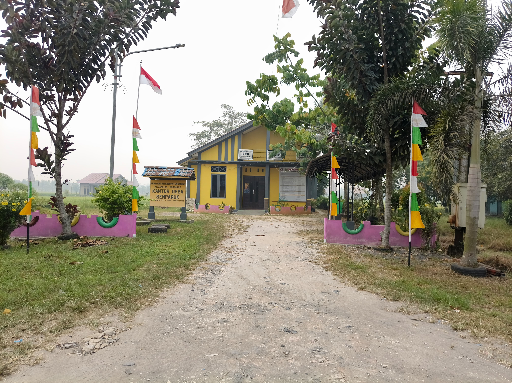
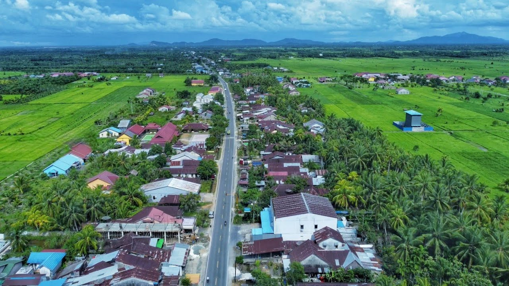

Galeri Desa Semparuk
Dokumentasi kegiatan pemerintahan, masyarakat, potensi, lingkungan, dan berbagai aktivitas Desa Semparuk.
Kumpulan Foto Desa
Kumpulan dokumentasi visual Desa Semparuk yang akan diperbarui secara berkala.







Jelajahi Galeri Desa
Dokumentasi desa dikelompokkan berdasarkan jenis kegiatan dan informasi yang ditampilkan.
Pemerintahan
Dokumentasi kegiatan pemerintahan, pelayanan, dan aktivitas perangkat desa.
Masyarakat
Dokumentasi kegiatan sosial, gotong royong, dan aktivitas masyarakat.
Potensi Desa
Dokumentasi potensi alam, ekonomi, produk, dan lingkungan desa.
Lihat Kegiatan Terbaru
Temukan informasi terbaru mengenai kegiatan dan aktivitas Desa Semparuk.